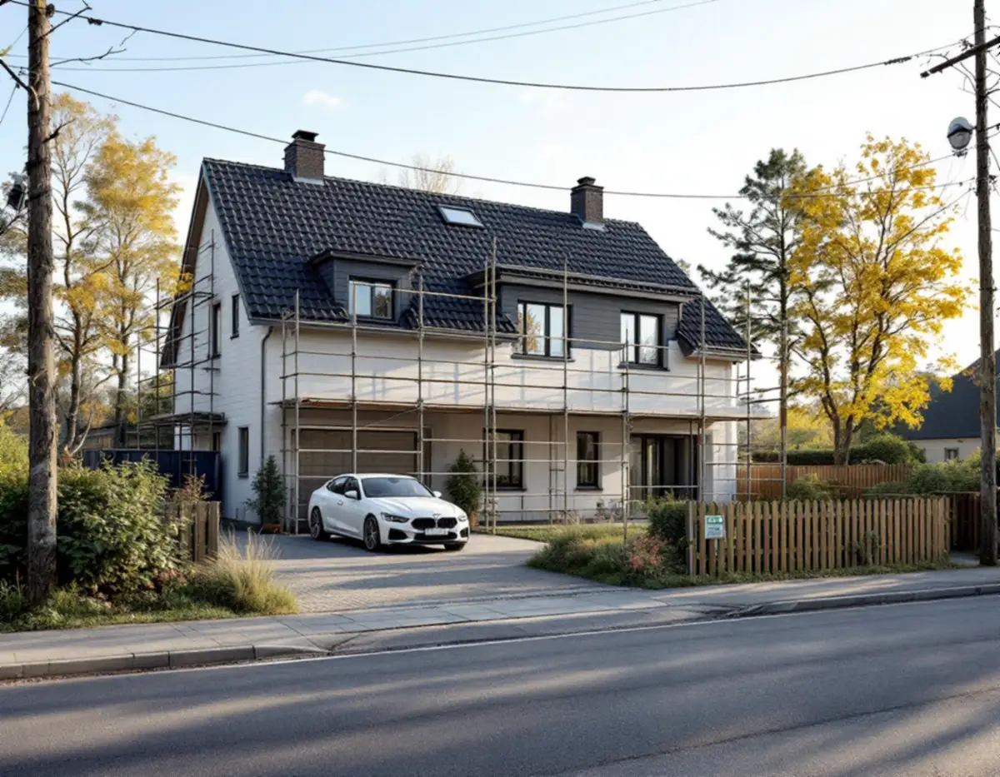
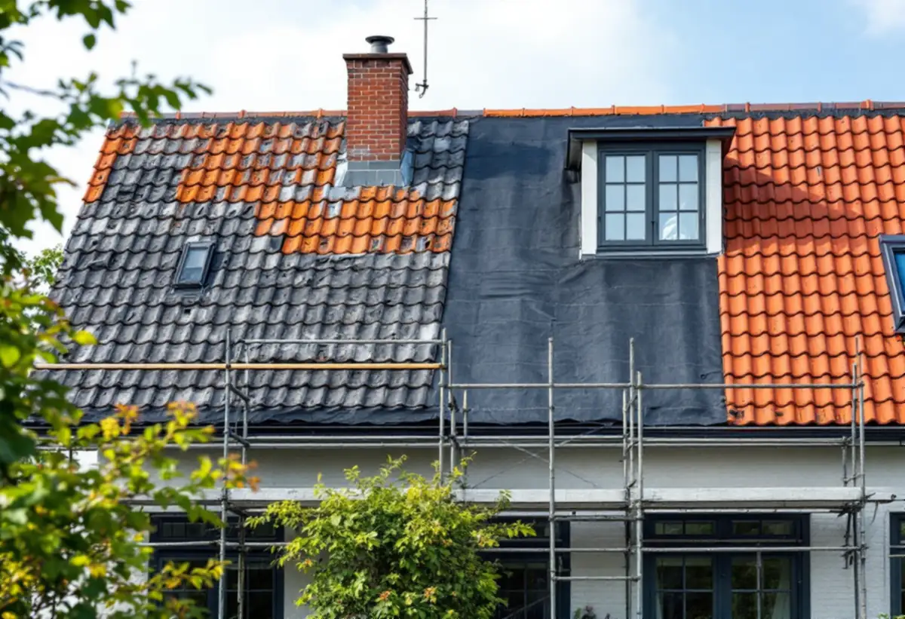

Platsbesök
Taket, tomten och tillfarten går vi igenom tillsammans.

Ett takbyte kräver plats på marken: ställning längs väggarna, en container för det gamla taket och en yta för det nya materialet.
Skicka gärna en bild på taket.
Något blev fel. Kontrollera uppgifterna eller ring 08 12 410 276.
Pris: från 1 400 kr/m² inkl. material, före ROT-avdrag
Vi tittar på jobbet på plats innan du får offert.
Du ser vad som ingår och vad det kostar.
Vi drar av ROT direkt och sköter ansökan.
Geal Entreprenad AB, Bromma. Org.nr 559303-7566.
I Sundbyberg, där tomterna ofta är små och gatorna smala, är det just den planeringen som avgör hur smidigt arbetet går. Geal Entreprenad AB byter tak på villor och radhus i Sundbyberg och planerar byggarbetsplatsen innan arbetet startar.
Sundbybergs stad kallar de tillfälliga funktionerna under byggtiden för byggetablering: byggbodar, containrar för material och verktyg och stängsel eller plank som inhägnar området. Staden skriver att etableringen bör placeras i anslutning till byggarbetsplatsen och på den egna fastigheten om det går.
Vid ett takbyte på en villa räcker det oftast med ställning längs huset och en container på tomten. Vi mäter upp var containern kan stå så att bilen kan tömma den, och var nytt material kan läggas utan att trädgården skadas.

Om etableringen måste stå på någon annans mark behövs fastighetsägarens tillstånd. Ägs marken av Sundbybergs stad, till exempel gatumark eller parkmark, skriver staden att du behöver söka tillstånd från polisen för att placera byggetableringen där. Ska stadens mark användas till något den normalt inte är avsedd för kan det också behövas tillstånd för markupplåtelse.
Byggbodar kräver tidsbegränsat bygglov, och beroende på läge och storlek kan även upplag för byggmaterial kräva lov. Eftersom etableringen ofta strider mot detaljplanen kan staden behöva höra grannarna. Vid ett vanligt villatak försöker vi därför hålla allt på tomten.
Sundbybergs stad skriver att det inte finns någon generell rätt för grannar att tycka till om allt som byggs. När staden ger bygglov skickar den däremot ett meddelande till berörda grannar, som då kan överklaga beslutet skriftligt inom tre veckor från den dag de fick det.
Om en ansökan om bygglov inte följer detaljplanen ska grannar och andra berörda enligt staden få lämna synpunkter genom ett grannehörande. Följer ärendet helt detaljplanen fattas beslutet utan att grannarna hörs. Ett takbyte med samma material kräver normalt inget lov, och då får grannarna inget meddelande. Vi tycker ändå att det är bra att berätta när ställningen kommer upp och när containern hämtas, eftersom arbetet hörs och syns.
Sundbybergs stad skriver att lovplikten för fasadändringar är utökad i Duvbo och för kulturhistoriskt värdefulla byggnader, och att det där för det mesta krävs bygglov. Duvbos miljöprogram räknar utbyte av takläggningsmaterial bland de åtgärder som omfattas av den utökade lovplikten. Utanför Duvbo krävs inte längre bygglov för fasadändringar på en- eller tvåbostadshus, så länge byggnaden inte är kulturhistoriskt värdefull.
Solcellspaneler kräver däremot bygglov i hela Sundbyberg, enligt staden. Om tak och plåt i Duvbo kan du läsa mer under plåtslagare i Sundbyberg.
När ställningen står och containern är på plats rivs det gamla taket i etapper, så att huset inte står öppet längre än nödvändigt. Läkt, underlagstäckning och råspont ses över, och skadat trä byts innan det nya taket läggs.
Om takläggning i Sundbyberg i stort finns mer under takläggare i Sundbyberg, och om tjänsten under takbyte.
Taket, tomten och tillfarten går vi igenom tillsammans.
Vi planerar var ställning, container och material ska stå.
Behövs gatumark tar vi upp frågan om polisens tillstånd i tid.
Etablering, material och arbete redovisas var för sig.
Gammalt tak rivs i etapper och nytt tak läggs.
Vi går igenom taket och tar bort etableringen.
Skatteverket räknar byte och reparation av takpannor och hängrännor på ett småhus som rotarbete, när du äger och bor i huset eller har det som fritidshus.
Avdraget är högst 30 procent av arbetskostnaden, högst 50 000 kronor per person och år och högst 75 000 kronor tillsammans med rutavdrag. Material och resor ger inget avdrag. Geal drar avdraget direkt på fakturan.
Takets yta och material, underlagets skick, hur ställning och container kan placeras och om tillstånd för gatumark behövs. En överblick finns i vad kostar ett takbyte. Efter ett gratis platsbesök får du ett skriftligt kostnadsförslag.
Byte av tegel-, betong- och plåttak.
Takbyte →Takbyte, takbesiktning och plåtarbeten.
Takläggare i Sundbyberg →Rött lertegel och synliga taktassar i Duvbo.
Takrenovering i Sundbyberg →Duvbo, potten och medgivandena.
Attefallshus i Sundbyberg →Ventilationen, OVK och Duvbo.
Badrumsrenovering i Sundbyberg →Nytt hus, träd och regler i Duvbo.
Byggföretag i Sundbyberg →Puts och kulör i stadskärnan.
Fasadmålning i Sundbyberg →Panel och puts på Duvbos villor.
Fasadrenovering i Sundbyberg →Duvbo, flerbostadshusen och lovet.
Fönsterbyte i Sundbyberg →Egnahemsvillornas fönster i Duvbo.
Fönsterrenovering i Sundbyberg →Trägolv i äldre villor och nya golv.
Golvläggare i Sundbyberg →Ta bort färg och fernissa från gamla golv.
Golvslipning i Sundbyberg →Duvbos villor och stadens lägenhetskök.
Köksrenovering i Sundbyberg →Lamellhus, kulörbyte och bostadsrätt.
Målare i Sundbyberg →Duvbos tak, rännor och lov.
Plåtslagare i Sundbyberg →Altan, pergola och staket enligt stadens guide.
Snickare i Sundbyberg →Ny tapet i äldre lägenheter.
Tapetsering i Sundbyberg →Duvbo, träden och riktlinjerna.
Tillbyggnad i Sundbyberg →Duvbos villor, kaminer och etablering.
Totalrenovering i Sundbyberg →Eller ring 08 12 410 276, mån–fre 08–17.
Skicka gärna en bild på taket.
Något blev fel. Kontrollera uppgifterna eller ring 08 12 410 276.